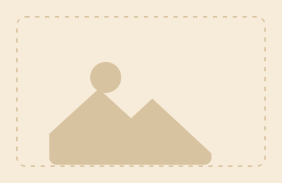

KecamatanJuara I Gambar Bercerita FLS3N Kecamatan Sukorejo 2026
Calista Nailah Ardania · Kelas V
Selamat datang di SDN Pakukerto II, Sekolah Dasar Berakreditasi A yang berkomitmen mewujudkan generasi jujur, mandiri, patuh, dan berprestasi melalui lingkungan belajar yang aman, nyaman, dan menyenangkan.
“Keberhasilan pendidikan membutuhkan sinergi antara sekolah, orang tua, dan masyarakat. Dengan semangat SPADA, kami berkomitmen menciptakan ekosistem pendidikan yang mendukung tumbuh kembang peserta didik menjadi generasi yang jujur, mandiri, dan patuh, berakhlak mulia, berpengetahuan, serta siap menghadapi masa depan.”
Endi Yulianto, S.Pd.I.
Kepala SDN Pakukerto II
Informasi kegiatan dan acara terdekat di SDN Pakukerto II.
Belum ada agenda terbaru yang dipublikasikan. Pantau terus halaman ini untuk info kegiatan sekolah selanjutnya.

KecamatanCalista Nailah Ardania · Kelas V
Jelita, Naura, Aisyah · Kelas IV–V
Kembangkan bakat dan minat di luar jam pelajaran akademis.
Daftar ekstrakurikuler resmi akan segera diperbarui di halaman ini.
----